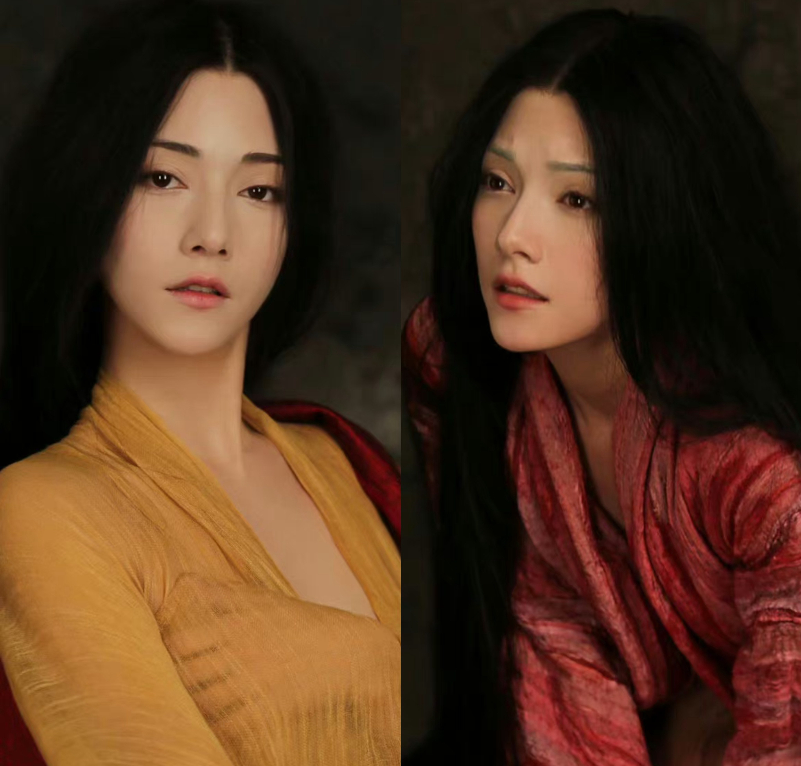

Welcome to the world of "Fengshen Trilogy"
"The Three Kingdoms of Gods" is a costume fantasy series directed by Wuershan and starring Fei Xiang, Li Xuejian, Huang Bo, Yu Shi, Chen Muchi, Na Ran, Xia Yu, and Yuan Quan. The first part was released in mainland China on July 20, 2023, and the second part was released in mainland China on January 29, 2025.
About the Movie
The series is adapted from the Ming Dynasty novel "The Investiture of the Gods" and the Song and Yuan Dynasty vernacular novel "The Story of King Wu's Conquest of King Zhou". It consists of three films: "The Investiture of the Gods Part I: Chaoge Storm", "The Investiture of the Gods Part II: War in Xiqi" and "The Investiture of the Gods Part III". The first part tells the story of the fox demon appearing in the world, King Zhou's tyranny, and the chaos in the world; the second part tells the story of the Yin Shang army approaching Xiqi, and Jiang Ziya and other Kunlun immortals helping Ji Fa to fight back; the third part tells the story of Ji Fa uniting with other princes to attack Yin Shou, Yuanshi Tianzun and the twelve golden immortals coming down the mountain, and the war between the three realms of humans, immortals and demons further escalates.